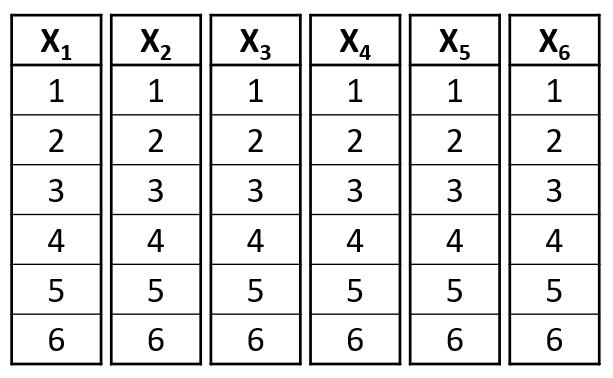
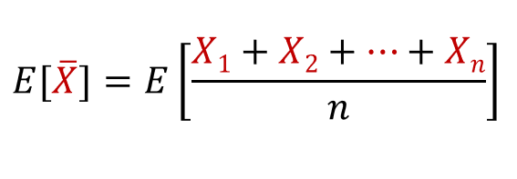
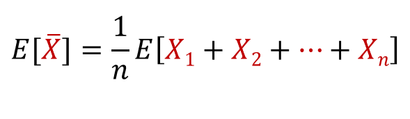
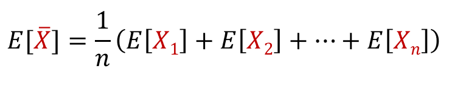
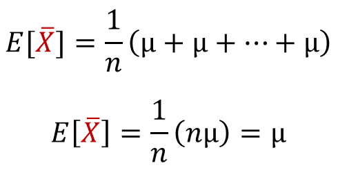
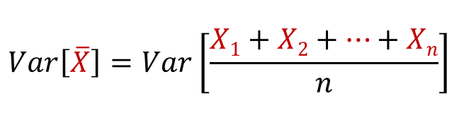
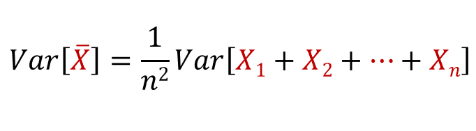
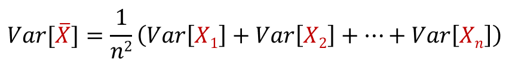
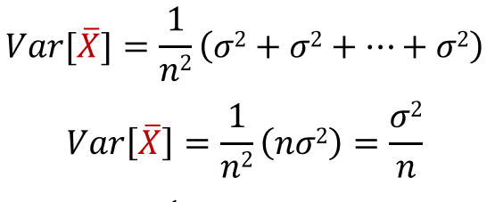

Lets say n dice were rolled, and the let the random variables {X1, X2, ..., Xn} represent the dice number, so X1 is the number of the first die, X2 is the number on the second die, and so on. The random variables are independent and all have the exact same distribution; these random variables are said to be iid (independent and identically distributed):
Since all the n random variables are idependent and identically distributed, then they would have the same mean (μ) and the same variance (σ2). Let the random variable X̄ be the mean of X1, X2, ..., Xn. The random variable X̄ can have decimal values unlike the Xi variables and has a different distribution from the Xi variables. Now lets try to find the expected value of X̄:
Since E[cX] = c * E[X]:
Since E[X + Y] = E[X] + E[Y]:
Since all the Xi vairables have the same mean:
Now lets try to find the variance of X̄:
Since var[kX] = k2var[X]:
Since var[X + Y] = var[X] + var[Y]:
Since all the Xi vairables have the same variance:
